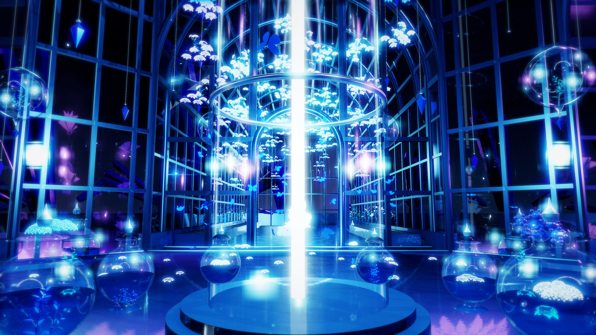
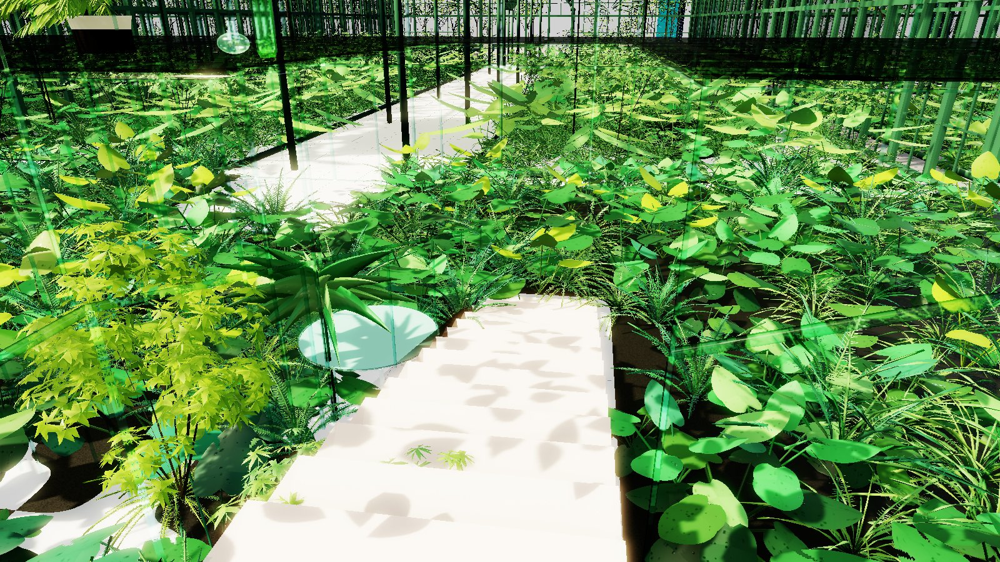
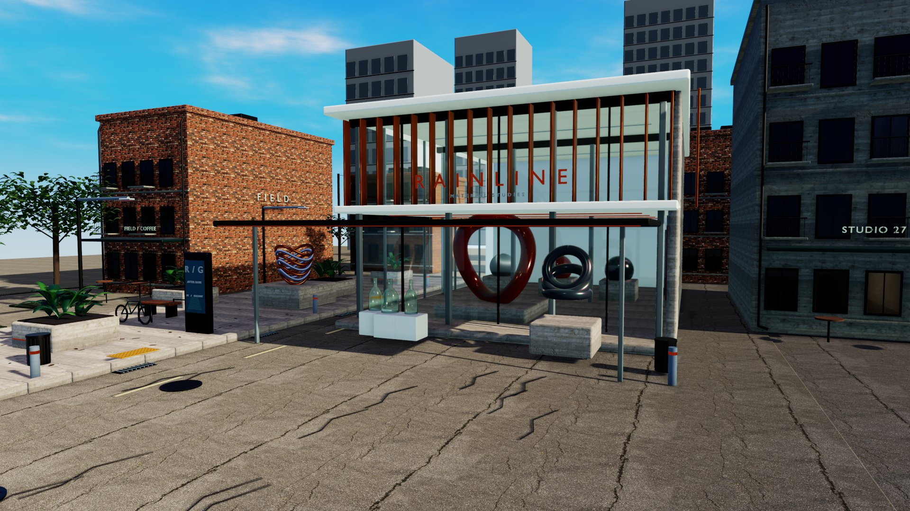
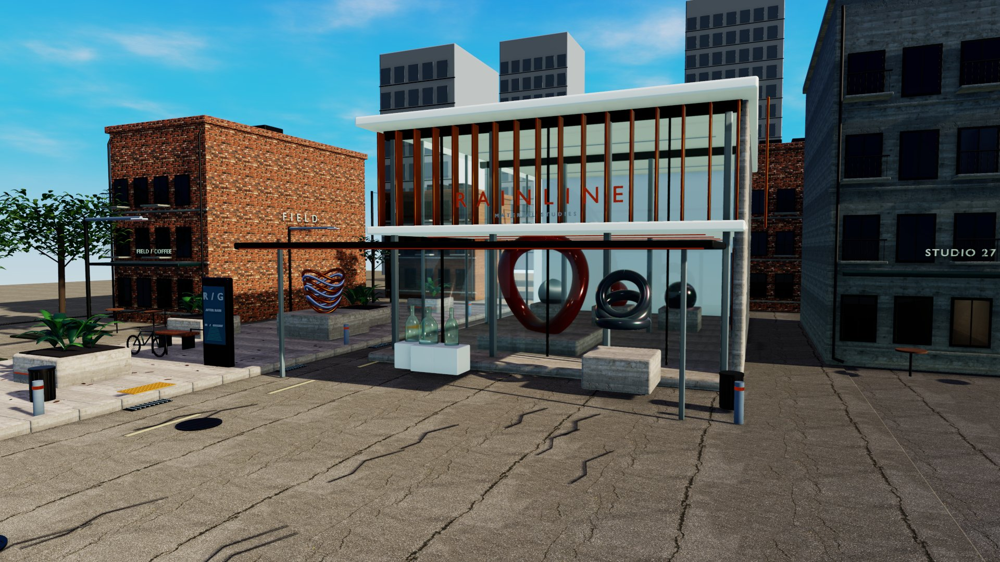
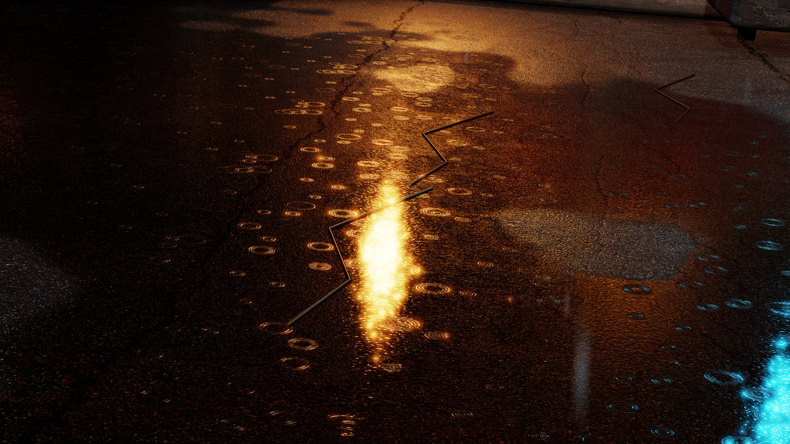

3840 × 2160 · 2× SS · in-game capture游戏内截图
From assets to actual renders从资源到实际渲染
StudioMCP
The final piece.
最后一块拼图
Connect asset preparation to actual in-game rendering, then bring the result back into the next decision.
让 Agent 从资源准备走到实际游戏渲染，并把结果带回下一次决策。
- Create创作
- Diagnose诊断
- Verify验证
- Reproduce复现
User-supplied render examples from task reproductions on other devices and agents.
图片由用户提供：跨设备、跨 Agent 复现任务中的渲染成果。
02/ 12Ecosystem生态
Connect the creative loop.
把工具连成创作闭环
StudioMCP gives an agent access to the real Studio state, edits, renders and persistence checks.
StudioMCP 让 Agent 能在实际 Studio 中读取、修改、出图并检查保存结果。
Commands + state命令 + 状态Decisions + feedback决策与反馈Build path构建路径
Editor tools bring assets into the game. Documentation supplies meaning. MCP brings state and results back to the agent.
资产经编辑器进入游戏；文档解释参数。MCP 将实际状态与渲染结果返回给 Agent。
Complete the feedback path
补齐反馈
Read actual state and imagery after an action, then keep, adjust or restore it.
操作后读取状态与实际图像，再决定保留、调整或恢复。
Keep clear responsibilities
保留边界
ME and rendering modules keep their responsibilities. MCP is optional; scenes remain usable without an agent.
ME 与渲染模块负责自身行为。MCP 是可选客户端；场景仍可继续手工编辑。
03/ 12Purposes用途
One interface. Four purposes.
同一入口，四种用户目标
Creation, material work, developer regression and cross-agent reproduction reuse the same bounded tools.
创作、调参、开发回归与跨 Agent 复现，复用同一套受约束的状态和操作接口。
MCP touchpointMCP 参与的步骤
04/ 12Iteration迭代
Let the result guide the next edit.
让结果参与下一次决策
An agent can work through documentation, state, bounded edits, actual rendering and independent reload checks.
Agent 的工作可以沿着文档、状态、有限修改、实际渲染和复载检查逐步推进。
Commands + state命令 + 状态Decisions + feedback决策与反馈Build path构建路径
Each comparison asks a concrete question: material appearance, framing, resource readiness or restoration after saving.
每轮比较围绕一个明确目标：材质是否符合预期、镜头是否合适、依赖是否就绪、保存后能否恢复。
05/ 12Shared foundations共享基建
Shared foundations. Wider reach.
共享基建，放大每个模块的价值
The runtime executes correctly; the client makes its capabilities usable, observable and composable.
底层负责正确执行，上层负责调用、观察和组织工作流。
Commands + state命令 + 状态Decisions + feedback决策与反馈Build path构建路径
Shared camera scope, ownership and color routing define module boundaries. MCP brings public capabilities into authoring and verification.
公共相机上下文、资源归属与颜色路由，让模块协作有明确边界。MCP 再把公开能力带入创作和验证任务。
Compose
更易组合
Reuse runtime foundations across shaders and scenes.
不同 Shader 和场景复用底层能力。
Explain
更易解释
Explain image differences with state and capture progress.
把画面差异与状态、捕获进度对应。
Recheck
更易回归
Repeat checks with the same scene and camera views.
用相同场景与镜头检查版本变化。
06/ 12Portability可迁移性
A workflow that travels.
工作方法可以跨 Agent 迁移
Reuse the brief, documentation, asset conventions and MCP contract across compatible agent clients.
复用任务说明、文档、资产约定与 MCP 契约，减少对某段对话或单个执行者的依赖。
Commands + state命令 + 状态Decisions + feedback决策与反馈Build path构建路径
The user supplied these renders as reproductions of the same tasks on another device with other agents: practical examples of workflow portability.
本展示的渲染图由用户提供，来自另一设备、其他 Agent 对相同任务的复现。它们展示了工作流可迁移的实际案例。
07/ 12Cross-agent render example跨 Agent 渲染案例
CrystalFantasy
CrystalFantasy
Six views of one scene: materials, composition and camera work.
六个视角，呈现场景创作与镜头组织的成果。

Scene language
场景语言
Structure, emission and planting establish depth, checked in game.
用结构、发光和植物建立空间层次，再从实际渲染检查表达。
View organization
镜头组织
Use all six views to check the subject, background and dome.
保留六个视角，检查主体、远景与穹顶在同一场景中的关系。
Keep iterating
继续迭代
Choose the next edit from images and state; retain the scene.
结合图像与状态提出下一轮修改，保存场景后继续创作。
08/ 12Material exploration材质探索
Greenhouse: test a hypothesis.
温室：围绕假设探索参数
Four parameter variants in two fixed views guide the next adjustment.
同一组对照视角呈现四套参数结果，让差异成为下一次调整的依据。
Floor and jade structure
地面与玉色结构
The v3 / r1 / r2 / r3 variants in one fixed view.
同一固定视角下的 v3 / r1 / r2 / r3 对照。

Glass and hanging garden
玻璃与悬挂花园
Reflection, transmission and background.
观察透射、反射和背景关系的变化。
- 01
Read the contract
先读语义
Use matching shader RenderDocs to interpret RI / IOR and other values.
先读匹配版本的 Shader 文档，确认 RI / IOR 等参数的含义及适用范围。
- 02
Bound the edit
再限定修改
Keep the camera fixed. Edit one related parameter group and retain its values.
固定镜头，只改变一组相关参数，并保留修改值与对照图。
- 03
Read the result
最后看结果
Read back state and compare renders before choosing the next edit.
读回当前状态并比较实际渲染，再决定是否保留修改或继续调整。
MCP reads and sets values. Shader documentation and actual renders guide the choice of those values.
MCP 负责读取与设置；参数如何组成目标效果，由 Shader 文档和实际渲染共同帮助判断。
09/ 12Iteration example迭代案例
Greenhouse: inspect the change.
温室：把变化放回真实画面
Before and after across three views, in the original framing.
三个视角的改前 / 改后对照，保留原始构图。
The agent proposes an edit and judges the result. MCP connects tool calls to game state and actual output.
Agent 提出修改、执行工具调用，并用结果继续判断。MCP 把这些操作落到游戏状态与实际输出。
10/ 12Self-iterating foundation渲染基座自我迭代
Build the scene, fix the foundation.
搭建场景，同时修好渲染基座
While lighting Rainline, the agent saw reflections that missed the sky, traced them to TomProbe 0.2.1 and wrote a fix brief. A parallel agent thread shipped TomProbe 0.2.2 from it, and the first agent verified the repair in the same scenes and cameras.
在为 Rainline 布光时，Agent 发现反射里没有天空，定位到 TomProbe 0.2.1 并写出修复说明。并行的 Agent 线程据此完成 TomProbe 0.2.2，再由原 Agent 用同样的场景和机位验证。
- 01AgentAgent
Notice
发现
Rainline reflections render without the sky.
Rainline 的反射里没有天空。
- 02AgentAgent
Isolate
定位
Probe diagnostics and A/B renders point to TomProbe 0.2.1 sky capture.
探针诊断与对照渲染指向 TomProbe 0.2.1 的天空采集。
- 03AgentAgent
Report
反馈
A fix brief for a parallel agent thread: the symptom, the likely cause and the behavior the fix needs.
给并行 Agent 线程的修复说明：现象、可能原因，以及修复后应有的行为。
- 04Parallel agent thread并行 Agent 线程
Fix
修复
From the brief, that thread ships TomProbe 0.2.2 with the sky-capture repair.
该线程按修复说明完成 TomProbe 0.2.2 的天空采集修复。
- 05AgentAgent
Verify
验证
Same scenes, same cameras: the sky is back in the reflections.
同样的场景与机位：反射里重新出现天空。
- 06AgentAgent
Ship
交付
0.2.2 goes out with the delivered scene packages.
0.2.2 随交付的场景包一起发布。
Same day同一天Symptom to verified fix · 2026-10-27从发现现象到验证修复 · 2026-10-27


Before · TomProbe 0.2.1修复前 · TomProbe 0.2.1After · TomProbe 0.2.2修复后 · TomProbe 0.2.2Step 05 in the game: the same four Rainline views before and after the fix. Drag the divider to compare.
第 05 步的游戏内画面：Rainline 同样四个视角的修复前后对照，拖动分割线比较。
| Found while building搭建中发现 | Module模块 | Change改动 |
|---|---|---|
| Rainline reflections missed the skyRainline 的反射里没有天空 | TomProbe | 0.2.2 sky-capture repair0.2.2 天空采集修复 |
| A custom sky carried over into the next scene自定义天空串到了下一个场景 | StudioMCP | Clearing a sky binding re-applies the scene's native sky清除天空绑定时重新应用场景原生天空 |
| ClubRoom's 8.3 km skyline was cut by the 1000 m far planeClubRoom 8.3 km 外的天际线被 1000 m 远裁剪面切掉 | StudioMCP | Opt-in camera far clip, 10–20,000 m可选的相机远裁剪面，10–20000 m |
| Greenhouse glass erased the glass behind it温室里前层玻璃把后面的玻璃抹掉了 | TomBSDF | Flat panes skip scene refraction; a glass-safe depth-of-field plugin is specified平板玻璃不再使用场景折射；已写出玻璃安全景深插件的需求 |
11/ 12Material detail材质细节
The final mile reaches the details.
最后一公里，也能回到材质细节
The supplied image contrasts puddle and wet-film appearance, moving from a finished view to a material-level question.
原图对比积水与湿膜：从整体成片走向具体材质表现的检查。

1Puddle积水2Wet film湿膜- 1Puddle积水 Flat reflection streak and ripple rings平展反射与涟漪环
- 2Wet film湿膜 Grainy rough-normal sparkle颗粒状粗糙法线闪烁
Developers: isolate and verify
开发者：定位与验证
Relate appearance differences to material settings, scene resources and the rendering path.
把效果差异与材质参数、场景资源和渲染路径对应起来。
Creators: express and iterate
创作者：表达与迭代
Choose focused edits around the visual goal and retain a scene that can be developed further.
围绕目标选择局部修改，并保留可继续工作的场景。
MCP connects material edits to actual game images through ME, existing shaders and runtime services.
MCP 通过 ME、现有 Shader 与运行时服务，把材质调整落到实际游戏画面中。
12/ 12Getting started上手
Start with a clear goal.
从一个明确的目标开始
Bring documentation, tools and inspectable output into a task that another person or agent can continue.
把文档、工具与可检查的输出组织成可继续执行的任务。
- 01
Match the environment
配齐工作环境
Install the host and one matching game bridge. Prepare the shaders, assets and rendering dependencies for the task.
安装 Host 与一个匹配版本的游戏 Bridge；按任务准备 Shader、资产与渲染依赖。
- 02
Read the contract, then act
读懂契约再执行
Read the Agent Guide, skill and matching RenderDocs. Inspect live capabilities, scene state and material scope.
按需读取 Agent Guide、Skill 与对应 RenderDocs；检查实时能力、场景和材质范围。
- 03
Retain a usable result
留下可继续工作的成果
Use images, state and saved-scene checks together. Hand the goal and results to the next user.
让图像、状态与存档检查相互印证，再把目标和结果交给下一位使用者。
Projects and documentation
项目与文档
Snapshot: StudioMCP 0.1.0 RC1 · Shared infrastructure 0.1.0.
版本：StudioMCP 0.1.0 RC1 · 共享基建 0.1.0。
User-supplied images show task reproductions on other devices and agents. Sources, versions and evidence scope are in the README.
原图由用户提供，展示跨设备 / Agent 的任务复现。详细版本、图片来源与验证范围见随附 README。
Scenes: CrystalFantasy and the greenhouse come from ProceduralParadise by ShiyumeMeguri (AGPL-3.0).
场景来源：CrystalFantasy 与温室来自 ShiyumeMeguri 的 ProceduralParadise（AGPL-3.0）。